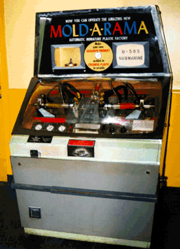

| I
regret to announce that this site will be on indefinite "hold" starting in 2004. I've greatly enjoyed being a pioneer web site for this obscure piece of the American scene, but my writing and work obligations, and the fact that I haven't been able to locate new pieces, means I'm putting the site on hold.
It will stay up for your perusal as long as I have the drive space, and I'll read any and all comments. Thanks to everyone for their support Be sure to check out the new Fox series "Wonderfalls," in which we're told Moldarama will have a role. And go to the links page for more Moldarama collectors! |
|  | We want to compile a list of all known Mold-A-Rama
in operation, and a menagerie of their products. Soon, you'll know where
to find these fun slags of plastic anywhere in the world!
<--A Mold-A-Rama machine at the Museum of Science and Industry, Chicago |
The provider of my old Board Room went down, losing all our posts. So let's try out my new Discussion Forum!
What I've seen of it looks pretty nice.
 Back
to Mark & Barb's home page!
Back
to Mark & Barb's home page!